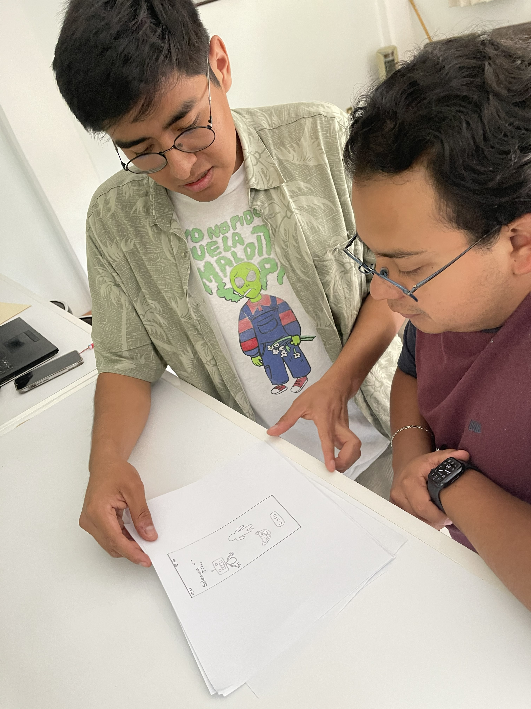
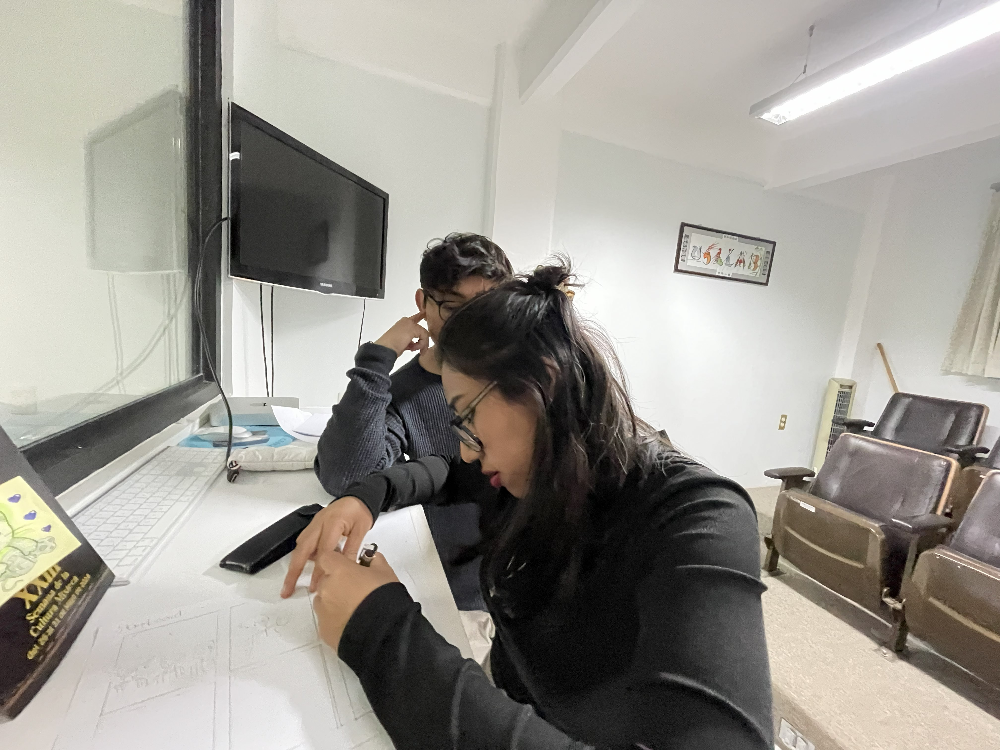
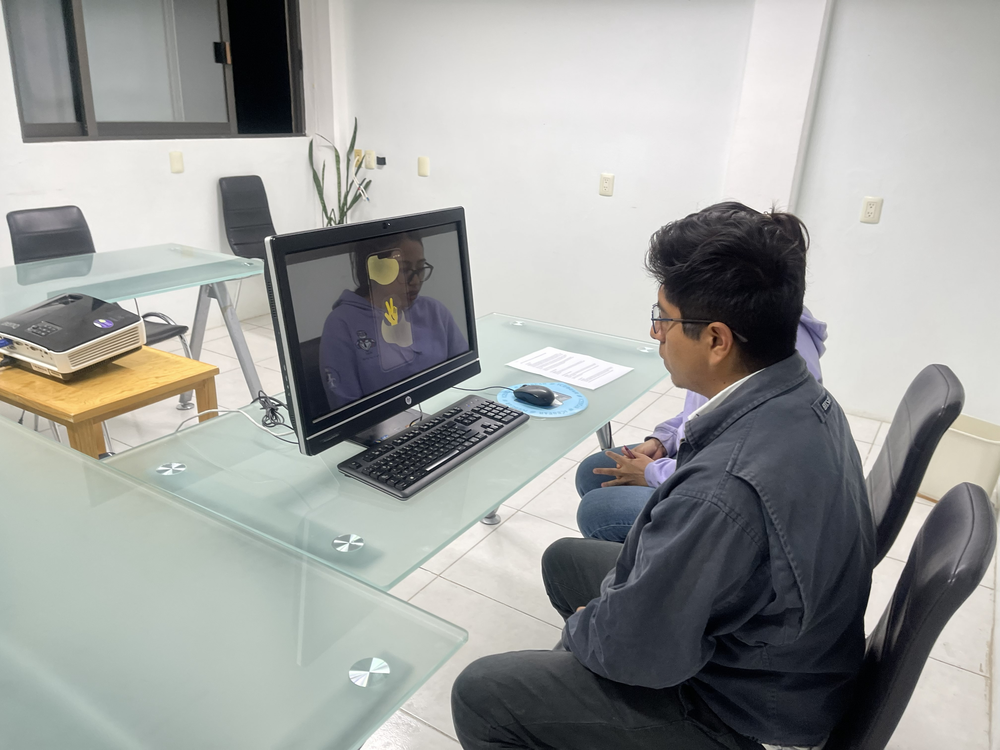

Emotional technology for rethinking men's role in society. A mobile app connected to smart wristbands, designed to help young men in Oaxaca identify and manage their emotions — safely, without stigma. The name means brother in Mixtec.
In Oaxaca, cultural traditions reinforce traditional masculinities — where anger is often the only socially acceptable emotion for men, and emotional expression is deeply stigmatized.
Men aged 15–29 have the highest suicide rate in México, with 16.2 cases per 100,000 inhabitants (INEGI, 2022). A survey in Mexico City revealed that 67% of men are unfamiliar with "new masculinities."
Existing mental health tools weren't designed with this cultural context in mind. They felt clinical, stigmatizing, or simply irrelevant to young men in Oaxaca.
Conducted a contextual study at a university in Huajuapan de León examining emotional literacy among local youth. Interviewed psychologists to understand cultural barriers specific to Oaxaca's context. Students reported difficulty identifying emotions due to cultural norms around masculinity.
8 engineering students aged 20–24 in the university's Usability Laboratory identified key preferences. Users preferred non-human avatars (animals, robots, abstract figures) and stressed the importance of culturally appropriate visual language.
Mind map sessions generated concepts evaluated on feasibility, cultural relevance, and social impact. Storyboarding validated the concept with participants of varying technical backgrounds. Result: Tíku — a mobile app + smart wristband with customizable avatars and emotional missions.
Wizard of Oz tests assessed conversation flow. A/B tests with 8 users evaluated color, fonts, and avatars. Final usability testing with 5 users across 6 task scenarios. Key change: lighter palettes, shorter dialogues, youth-appropriate language.

Focus group · Contextual inquiry with students

Paper wireframes · Early co-design session

UsaLab · Storyboard development

Usability Testing · Real Users
Hi-fi prototype · Final app screens
Users rejected human avatars, especially male ones. Robot and animal avatars created psychological distance that made emotional expression safer and less stigmatized.
Light, warm palettes were preferred to avoid associations with sadness. Informal, peer-like language reduced stigma. "Bro" was seen as unnatural — refined in V2.
Reward systems (unlockable avatar customizations) significantly increased motivation to engage with emotional exercises and return to the app consistently.
"Users felt more comfortable sharing emotions with women due to fear of judgment from men — and they strongly preferred non-human avatars as emotional companions."
— Focus Group Finding, Usability Laboratory · UTMThree prototype iterations with 38 total activities, achieving a 100% task completion rate. User satisfaction improved from 65% to 82% across iterations.
The project aligns with four UN SDGs: Goal 3 (Good Health), Goal 5 (Gender Equality), Goal 10 (Reduced Inequalities), and Goal 16 (Peace & Justice).
Selected as finalist at HCI International 2025 in Gothenburg, Sweden — one of the most prestigious HCI conferences globally.
"The only thing I truly wish is for someone to sincerely ask, 'How are you?' and for me to feel genuinely heard."
— Study participant